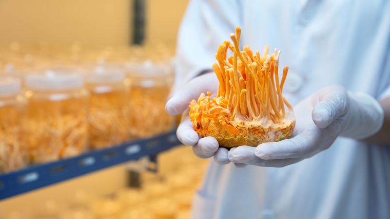

Tác hại của đông trùng hạ thảo và cách sử dụng an toàn
Đông trùng hạ thảo từ lâu đã được biết đến với nhiều lợi ích cho sức khỏe, nhưng không phải ai cũng hiểu rõ về những tác dụng phụ và rủi ro khi sử dụng. Bài viết này sẽ giúp bạn tìm hiểu sâu hơn qua ba phần: Tác hại của đông trùng hạ thảo và Biện pháp hạn chế tác hại của đông trùng hạ thảo.
Tác hại của đông trùng hạ thảo đối với sức khỏe tổng thể
Đông trùng hạ thảo, một loại nấm quý hiếm, đã được biết đến với nhiều lợi ích cho sức khỏe trong nhiều thế kỷ, đặc biệt trong y học cổ truyền của các nước như Trung Quốc và Nepal. Tuy nhiên, bên cạnh những lợi ích ấy, việc sử dụng đông trùng hạ thảo cũng tiềm ẩn nhiều rủi ro và tác hại.
Nguy cơ gây chảy máu
Một trong những tác hại của đông trùng hạ thảo mà nhiều người không biết đến là khả năng gây chảy máu. Đông trùng hạ thảo có thể hoạt động như một chất làm loãng máu, làm tăng nguy cơ chảy máu, đặc biệt trong các tình huống như phẫu thuật hoặc nhổ răng.
Nhiều báo cáo đã chỉ ra rằng những người sử dụng đông trùng hạ thảo có thể gặp phải hiện tượng chảy máu quá mức sau khi thực hiện các thủ thuật này. Do đó, người dùng nên thận trọng và tránh sử dụng đông trùng hạ thảo trước khi tiến hành bất kỳ phẫu thuật nào.
Tương tác với thuốc
Tác hại của đông trùng hạ thảo cũng liên quan đến khả năng tương tác với nhiều loại thuốc khác nhau. Nghiên cứu cho thấy đông trùng hạ thảo có thể làm tăng tác dụng của thuốc điều trị tiểu đường và insulin, điều này có thể dẫn đến tình trạng hạ đường huyết.
Đông trùng hạ thảo có thể mang lại nhiều lợi ích cho sức khỏe, nhưng cũng không thể phủ nhận những tác hại của đông trùng hạ thảo mà người sử dụng cần lưu ý. Với những thông tin đã nêu, hy vọng bạn sẽ có cái nhìn tổng quan hơn về loại nấm này và biết cách sử dụng một cách an toàn. Luôn thận trọng và tìm kiếm sự tư vấn y tế khi cần thiết để bảo vệ sức khỏe của bản thân.
Mặc dù vẫn cần thêm nhiều nghiên cứu trên con người để xác nhận, nhưng những thông tin này đủ để người dùng cần cảnh giác khi sử dụng đông trùng hạ thảo cùng với thuốc điều trị tiểu đường.
Tác hại đối với phụ nữ mang thai và cho con bú
Giai đoạn mang thai và cho con bú là thời điểm cực kỳ nhạy cảm, đòi hỏi sự cẩn thận trong việc bổ sung dinh dưỡng hay sử dụng bất kỳ sản phẩm nào. Đông trùng hạ thảo dù được biết đến với nhiều lợi ích sức khỏe, cũng không phải là ngoại lệ. Vậy phụ nữ mang thai và đang cho con bú cần lưu ý những gì về tác hại của đông trùng hạ thảo, và liệu sản phẩm này có thực sự phù hợp trong giai đoạn đặc biệt này?
Thiếu thông tin an toàn
Một trong những tác hại của đông trùng hạ thảo mà nhiều người chưa nhận thức rõ là sự thiếu hụt thông tin về độ an toàn của nó đối với phụ nữ mang thai và cho con bú. Hiện tại, chưa có đủ dữ liệu đáng tin cậy để xác định liệu đông trùng hạ thảo có an toàn khi sử dụng trong thời kỳ mang thai hay cho con bú hay không. Do đó, để bảo vệ sức khỏe của mẹ và bé, tốt nhất là nên tránh sử dụng đông trùng hạ thảo trong những giai đoạn này.
Nguy cơ gây dị ứng
Ngoài những tác hại đã nêu, việc sử dụng đông trùng hạ thảo cũng có thể dẫn đến các phản ứng dị ứng ở một số người. Các triệu chứng như ngứa, nổi mẩn đỏ hoặc khó thở có thể xảy ra, đặc biệt là đối với những ai có tiền sử dị ứng với nấm hoặc các loại thực phẩm khác. Những tác hại của đông trùng hạ thảo này cần được xem xét kỹ lưỡng trước khi quyết định sử dụng.
Comment
Hello cac ban!
Bai viet qua hay admin oi